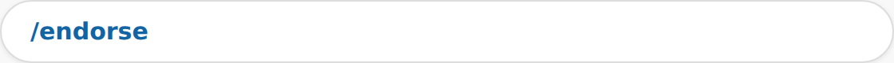
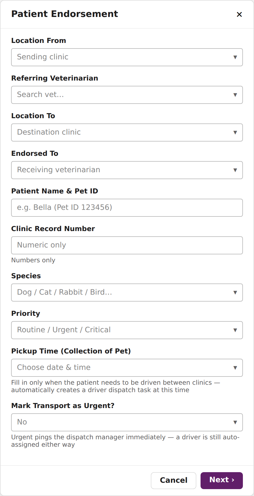
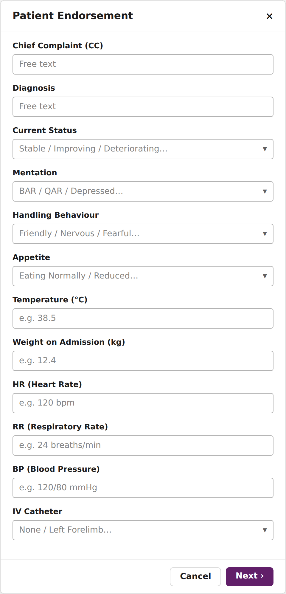
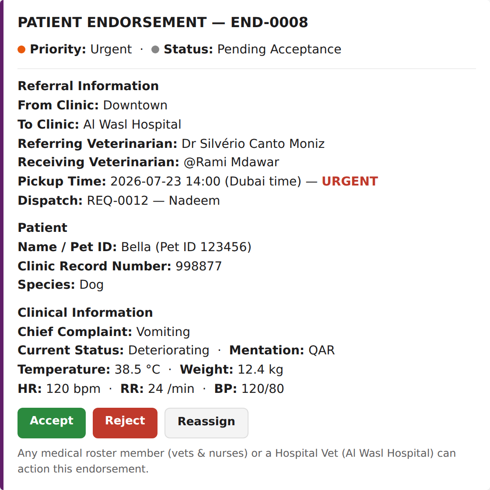
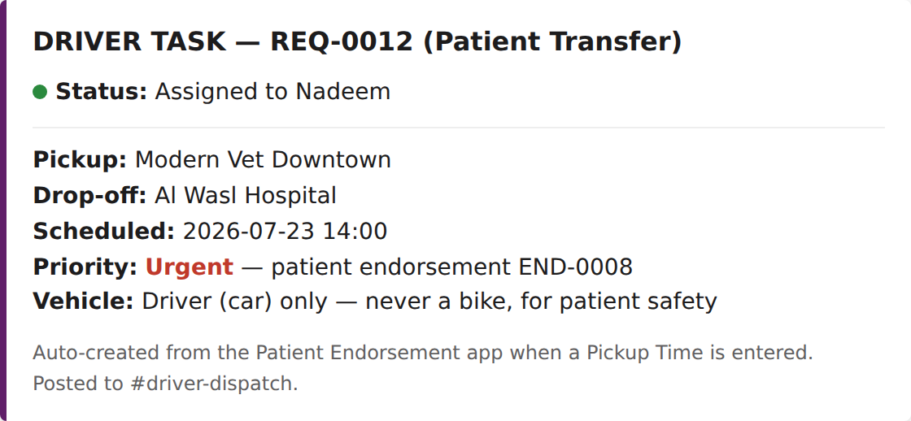
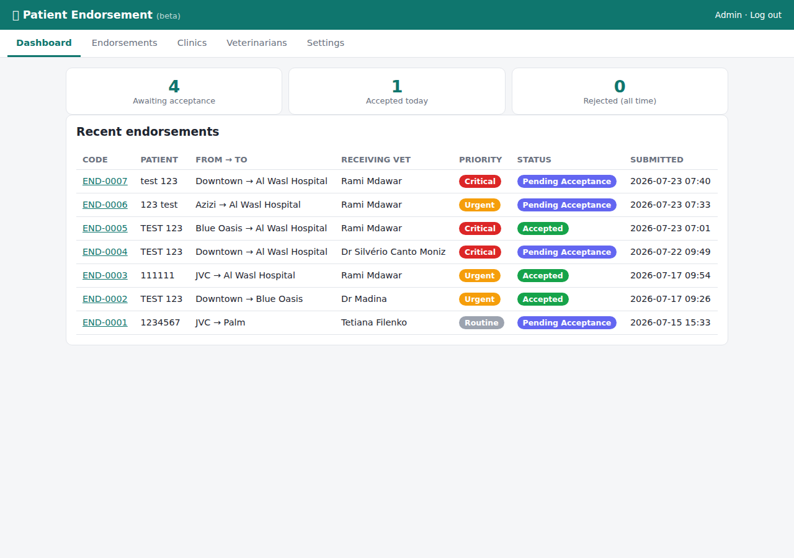
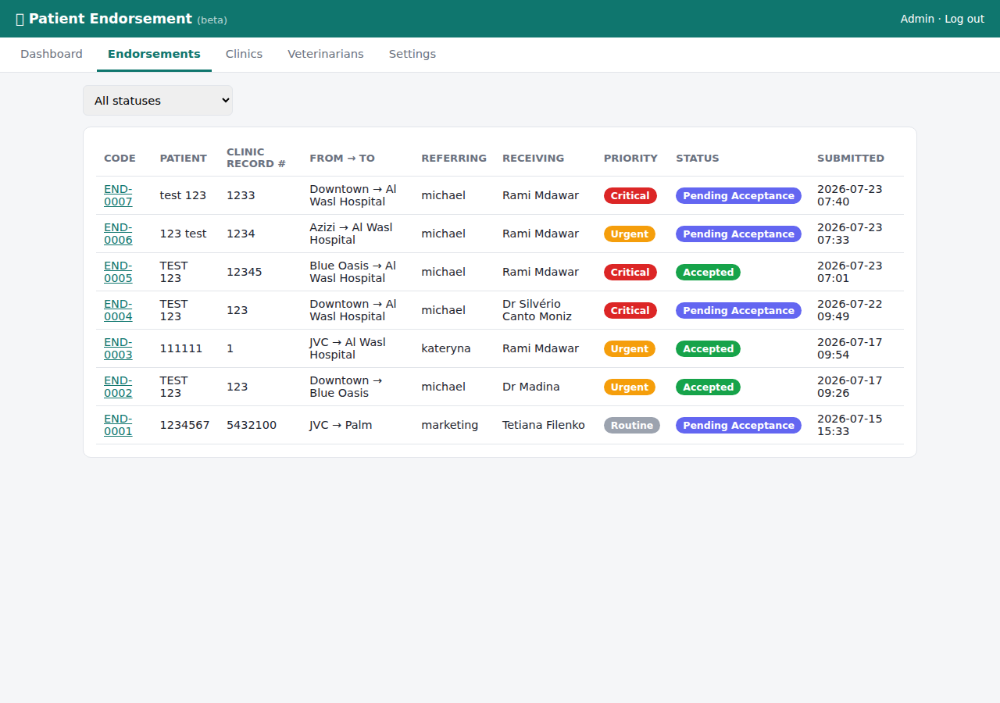
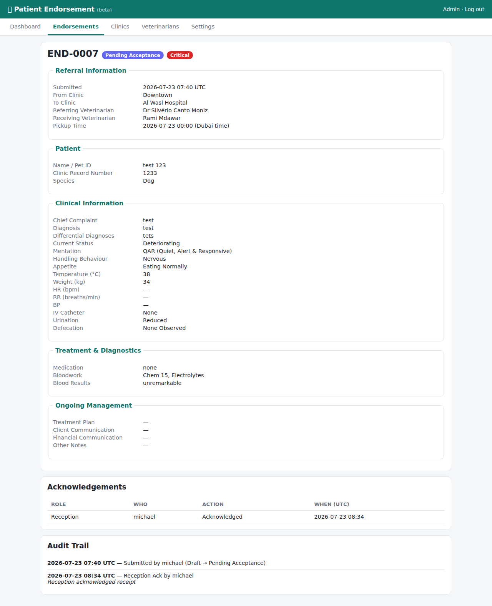
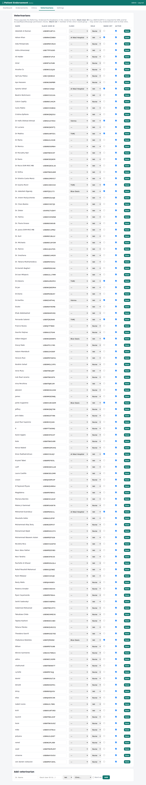
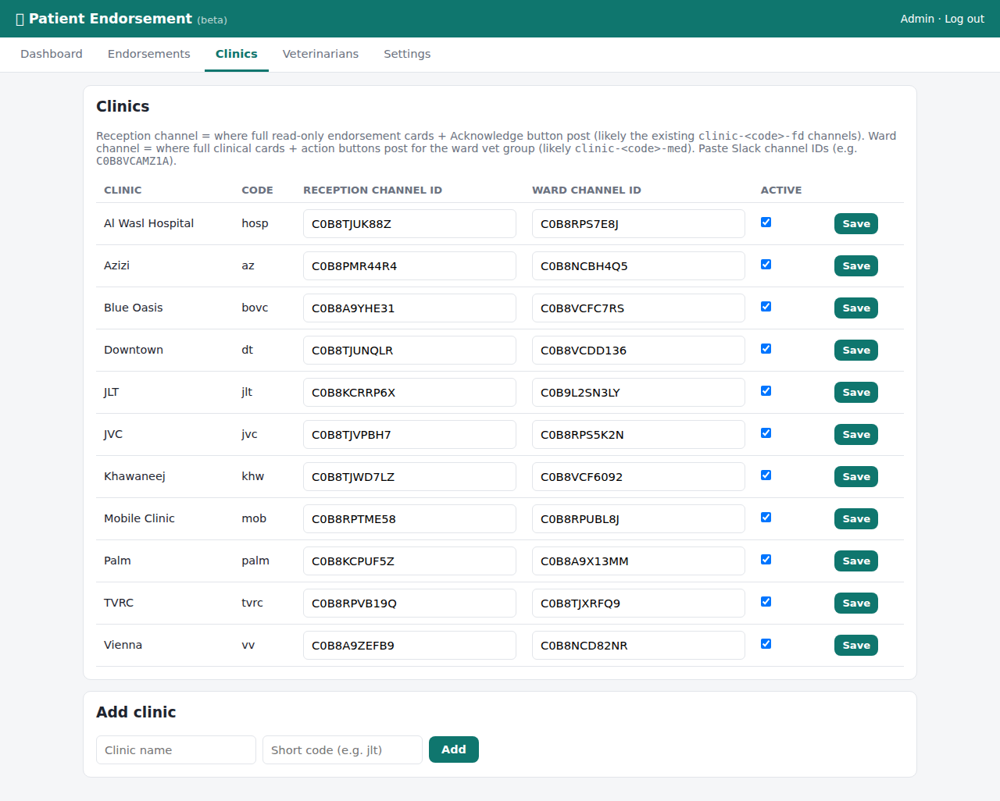

Handing a patient over to another clinic or the hospital? This app makes sure the receiving vet gets everything they need — referral details, vitals, and a driver if the pet needs to travel — in one place.
← All app manualsIn any Slack channel or DM, type /endorse and press Enter. A form will pop up.

Pick the sending clinic, the destination clinic, and who's referring / receiving the patient. Add the patient's name, Pet ID, and Clinic Record Number. Set the Priority (Routine / Urgent / Critical).
If the pet needs a driver to physically move between clinics, fill in Pickup Time (Collection of Pet) — this automatically books a driver for you. Toggle Mark Transport as Urgent? only if dispatch needs to be pinged immediately; a driver is assigned either way.

Chief complaint, diagnosis, current status, mentation, handling behaviour, appetite, temperature, and weight. This year we added HR (Heart Rate), RR (Respiratory Rate), and BP (Blood Pressure) so the receiving team has full vitals up front.

Once you hit submit on the final step, the endorsement is created and everyone who needs to know gets notified immediately (see below).
Gets a direct Slack message with the full endorsement card.
Get the full actionable card with Accept / Reject / Reassign buttons — they're the ones who action it.

Get an informational copy (no buttons) — just so the sending side can see the case moving, without confusing them into thinking they need to act.
Every endorsement — accepted, rejected, or still pending — is logged here as a permanent record for management visibility.
If you filled in a Pickup Time, a driver task is auto-created and posted to #driver-dispatch — patients only ever travel with a Driver (car), never a Bike Rider.

The assigned receiving vet, any ward vet at the destination clinic, or a Hospital Vet (a vet based at Al Wasl Hospital, who can step in on any case anywhere).
Confirms the clinic is ready to receive the patient. The card updates to show accepted, and everyone notified above sees the status change.
Reject asks for a short reason. Reassign lets you pick a different vet or clinic to send it to instead.
For managers who want to see everything in one place: vetalliance.website/endorse-app




